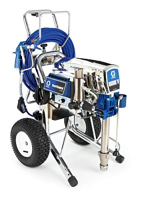

При необходимости гидроизоляции материалом Акваблокер значительных площадей (таких, например, как кровли), вы можете использовать мощный аппарат безвоздушного распыления.
Мощный аппарат безвоздушного распыления GRACO Mark V позволяет наносить вязкие покрытия (Акваблокер, латекс, эмульсии, штукатурки для внутренних работ, шпаклевки)
- БЫСТРО! Аппарат безвоздушного распыления GRACO Mark V позволяет наносить Акваблокер значительно быстрее, чем при ручном нанесении кистью или валиком.
-
РОВНО! Оба слоя Акваблокера наносятся аппаратом Mark V максимально равномерно
- ЧИСТО! ЭКОНОМНО! При нанесении Акваблокера аппаратом Mark V практически отсутствует разлет материала
- ПРОСТО! Наносить Акваблокер с помощью аппарата безвоздушного распыления очень просто. Очистка аппарата осуществляется не менее легко: аппарат имеет программу автоматического самоочищения
Mark V – простой и надежный аппарат, подходящий для работы зимой и летом. Для еще большего ускорения процесса нанесения вы можете использовать три пистолета одновременно.
Грако Марк 5 идеально подходит для гидроизоляционных работ и прочих ремонтных и строительных работ. Марк 5 отлично зарекомендовал себя на объектах крупномасштабного строительства жилья, коммерческих зданий, промышленных работ и капитального строительства. Максимальная производительность составляет 4,8 л/минуту при давлении 138 бар.
Система умного контроля SMART позволяет устанавливать контроль расхода Акваблокера, «запоминает» нужное рабочее давление, облегчает работу в автоматическом режиме. Высокое качество аппарата гарантирует долгосрочную экономию на расходуемом материале и обслуживании аппарата Mark V.
AutoClean™2 + разгрузочный клапан повышенной прочности
Теперь полностью автоматизированный. Подсоедините распылитель и переведите разгрузочный клапан повышенной прочности в положение AutoClean. Система сделает все остальное: во время выполнения вами других операций по очистке, система произведет очистку распылителя, шланга, фильтров и корпуса в автономном режиме!
Привод и SmartControl™ 2.0
Установка управляется высокопроизводительным бесщеточным двигателем DC.
- Экономия энергоресурсов! Система SmartControl позволяет использовать привод лишь когда необходима подача давления
- Позволяет мгновенно повышать давление в наконечнике и поддерживает высокую точность давления
- Цифровой дисплей, отображающий номинальное давление, счетчик литров и коды ошибок:
ВСЕ – НАЖАТИЕМ ОДНОЙ КНОПКИ
Стойка TiltBack™
Удобная емкость - замена, очистка и обслуживание
Насос Endurance™
Надежный поршневой насос Graco. Низкое расположение фильтра для улучшенного всасывания материалов без кавитации. Впускной патрубок HandTight™ и насосный агрегат: позволяет очистить клапаны за пару минут без отрыва от работы и без применения специальных инструментов!
Поставляется в комплекте и готов к работе!
Если у вас возникла необходимость разового нанесения материала с помощью мощного аппарата безвоздушного нанесения GRACO Mark V, вы можете обратиться к нам.
Технические характеристики:
Максимальное рабочее давление: 230 бар
Максимальная производительность: 4.5 л/мин
Максимальный размер сопла: 0.035
Высота подъема шланга: до 50 м
Питание: 230 В 1-фазного переменного тока, 50/60 Гц, 7,5 А
Масса: 59 кг